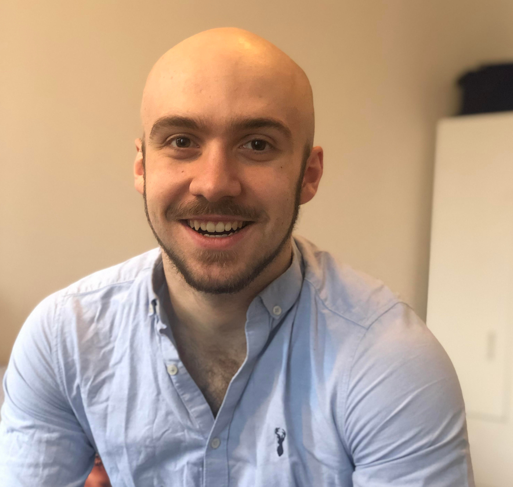

scholar · github · twitter · linkedin · cv
I am a third-year DPhil (PhD) student at the University of Oxford supervised by Prof. Jakob Foerster as part of FLAIR. I am broadly interested in reinforcement learning, especially goal-conditioned RL, exploration, self-supervised RL, long term decision making and autocurricula.

During my DPhil I had the good fortune to intern with Mikael Henaff at FAIR.
$firstname [dot] tryfan [dot] $lastname [at] gmail [dot] com